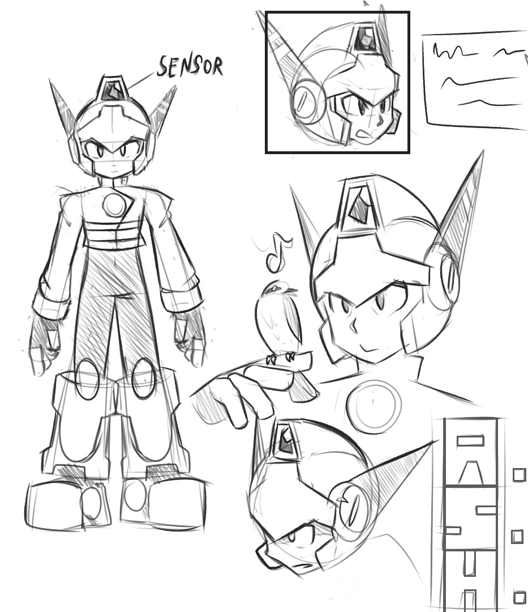
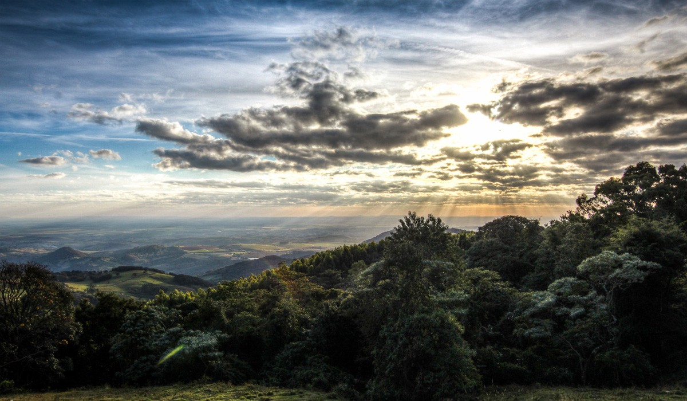
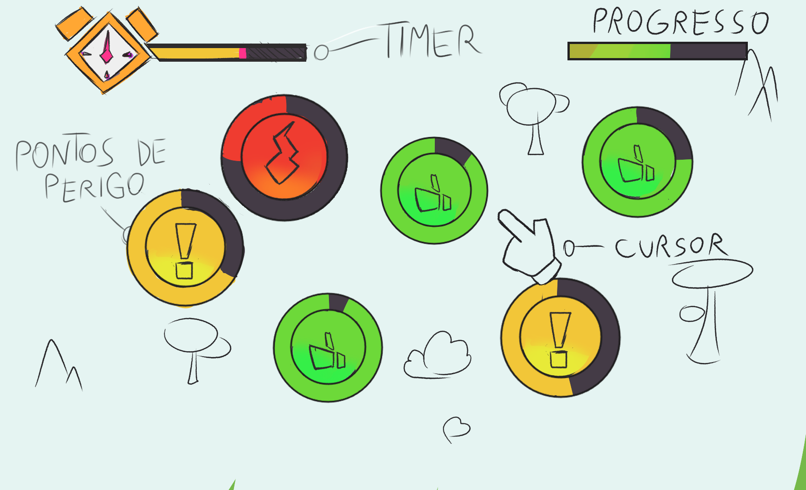

A.S.H. é um jogo educativo em desenvolvimento, ambientado na Serra Paulista, que ensina a reconhecer e evitar riscos de queimada por meio de decisões. Esta página apresenta a ideia do projeto e o rascunho já produzido.
Em A.S.H., o jogador acompanha A.S.H (Agente de Segurança de Habitats), um androide-guardião criado para patrulhar a mata. Seu sensor identifica o nível de risco de cada trecho em três cores: verde, amarelo e vermelho. A missão é reconhecer o perigo cedo, agir no momento certo e saber quando pedir ajuda especializada.

Quando a vegetação está saudável e sem ameaças, o sensor de A.S.H permanece em verde. É o estado de equilíbrio que o androide precisa preservar durante sua patrulha.
Uma bituca acesa na vegetação seca, uma fogueira mal apagada ou outra pequena fonte de risco faz o sensor piscar em amarelo. Se A.S.H chegar a tempo e pisar sobre o risco, ele o elimina antes que o vento e o calor transformem o descuido em fogo.
Quando o risco vira um incêndio, o ponto fica vermelho. A.S.H não tenta combater o fogo sozinho: ele aciona o Corpo de Bombeiros. O jogo reforça que incêndios florestais exigem ajuda especializada e que improvisar pode agravar a situação.
A cada território protegido, A.S.H avança para uma nova fase. Os riscos aparecem com mais frequência e o tempo de reação diminui. Se muitos focos se espalharem ao mesmo tempo, o androide perde o controle daquele trecho e precisa recomeçar a vigilância.
A maior parte dos incêndios florestais no Brasil não começa por acaso — começa com uma fogueira, uma queima de lixo ou um descuido em dia de vento seco. Conscientizar sobre isso não é só alertar sobre o perigo: é mostrar, na prática, o momento exato em que dava pra ter sido diferente.
É aí que entra o jogo: em vez de só informar, ele coloca o jogador diante da mesma decisão que gera um incêndio real — e deixa que ele sinta a consequência. A ideia é que essa experiência fique mais na memória do que um cartaz ou uma campanha, e ajude a formar o hábito de reconhecer risco antes que ele vire fogo.
É mata atlântica remanescente, nascente de rios que abastecem cidades inteiras e casa de espécies que não existem em nenhum outro lugar. Todo o cenário do jogo é baseado na serra, para que aprender a jogar seja também aprender a olhar para a mata com outros olhos.

Ao lado está um rascunho do mapa aberto da floresta que A.S.H patrulha: um trecho da Serra Paulista espalhado com diversos pontos de foco — verde, amarelo e vermelho, conforme os níveis de risco descritos na proposta — que o jogador precisa identificar e priorizar a cada rodada.

Estamos apresentando o A.S.H. presencialmente, com a proposta completa e o rascunho jogável em andamento.